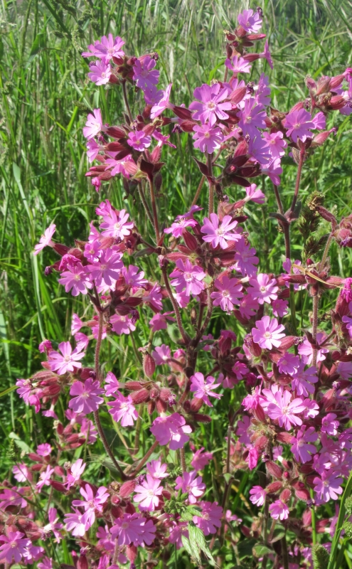

Le Ménage ès Feuvres,
St. Ouên.
Lé 2 d'août, 1975
Moussieu l'Rédacteu,
"J'avons apprîns à l'êcole aniet," j'disais à Papa eune séthée quand j'tais mousse et qué j'tions au pid du feu auprès l'thée, "qué des mots substantifs sont du genre mastchulîn ou fémînîn. J'ouiyais Mess Coutanche té pàler d's iliets dans san gardîn quand il est v'nu à la forge à matîn, et Mess Maugi, Laïesse, t'a d'mandé si tu peux lî soder eune iliette quand j'avons 'té lî d'mander pour un mio d'bra pour mett' sus la cope à tan dé. Lé mot iliette est-i' l'fémînîn du mot iliet?"
"Nannîn, man garçon," i' m'dit, "i' s'adonne qué l'mot iliet est mastchulîn, et qué l'mot iliette est fémînîn, mais iun n'est pon l'fémînîn d'l'autre, car les deux mots n'veulent pon dithe la même chose.

"Un iliet est eune flieur dé gardîn ("carnation" en Angliais), et eune iliette est un p'tit entonneux. Nou-s-en fait sèrvi ieune pour vèrser d'la paraffinne dans des lampes. la nouotre est en blianc-fé. I' sont c'modes à vèrser autchun litchide dans des boutelles tch'ont des p'tits goulets.
"L'iliet d'gardîn est eune belle flieur parfeunmée. Et y'en a d'pus d'eune couleu, des bliancs, des bigathés, et d's Iliets d'Înde, tchi sont roses, bruns et bliancs. Mais y'a d's iliets sauvages étout, appelés Iliets du Dgiabl'ye, Iliets d'Falaise, Iliets d'Fosse, Iliets d'Rotchi et Iliets d'Mielle. Et pis y'a d's iliets tchi n'sont pon des flieurs. Par exempl'ye, d's iliets sus la tête au lis des g'veux. tu'en a iun té-mème," Papa m'dit, "à drouaite, à bein près en d'ssus d'yi. Ch'est pour chenna qu'ta Manman fait la rile à drouaite quand ou graie tes g'veux. autrément, l'iliet empêch'chait tes g'veux d'lus assiéthe par dessus comme i' faut. I' dispathaîtra auve lé pâssage du temps car lé c'menchement d'la rile lé divise en deux.
"Et l's annimaux en ont étout tchiquefais. Nou dit qué quand eune vaque en a driéthe les dgéthets oulle est bouanne à lait.
"Et y'a l's iliets d'souliers et d'bottes pour les lachi. Et l's iliets dg'ieau tchi sont tchiquefais formés par des têtes souos l'ieau ou par la rencontre des couothants."
"Et tch'est tch'est la difféthence entre eune iliette et eune iliéthe?" jé d'mandis à Papa. "Moussieu L'Montais t'a dit dans la forge tch'i' y'a d's iliéthes dans cèrtaines vielles maîsons."
"Eh bein," Papa m'dit, "l'iliéthe est tout à fait eune aut' affaithe. Ch'est qune pétite ouvèrtuthe ou f'nêtre - mais bein pus p'tite qu'eune f'nêtre ordinnaithe - qué l's anciens faîsaient sèrvi pour dgetter les gens tch'appréchaient d'la maîson. En êffet, ch'tait pour dgetter l's ennemîns et les malfaîteurs tchi rôdaient les c'mîns dans les touos vièrs temps, et les pirates tchi v'naient machacrer les gens.
"L'iliéthe, tchiquefais appelé eune lutchèrne, 'tait d'habitude dans la côtchiéthe dé d'vant d'la maîson, S côté d'la grand' porte. Y'en avait tchiquefais dans l's églyises étout. J'en ai veu dans cèrtaines églyises en Angliétèrre pour l'ûsage des lépreux dans l'temps tch'i' y'en avait un tas dans l'pays. Y'avait un p'tit coin enfreunmé et à part et à côté du Grand Autel, et l'iliéthe 'tait pèrchie l'travèrs dé la muthâle en direction et directement en veue d'l'Autel pour qué les lépreux pûssent vaie la célébrâtion d'la Sainte Cène sans êt' en contact auve la congrégâtion."
"Est-ch' tch'i' y'avait des lépreux en Angliétèrre?" jé d'mandis à Papa. "J'criyais qué ch'tait rein qu'dans les pays mentionnés dans la Bibl'ye dans l'temps d'Nouotre Seigneur tch'i' y'en avait, mé."
"Mais, oui, y'en avait en Angliétèrre," Papa m'dit. "Y'en avait mème tant tch'i' y'avait un hôpita (ou p't-êt' pus d'iun) exprès pour ieux. Dgieu mèrci, i' n'y en a pon à ch't heu, mais i' y'a d's hôpitchieaux où'est tch'i' sont concentrés dans cèrtains pays en Orient et en Améthique du Sud, et y'en a iun ès Êtats-Unis. I' m'sembl'ye qué ch'tait dans l'Êtat d'Louisianne. Y'a bein mains d'lépreux d'nouos jours qué dans l'temps d'Nouotre Seigneur car i' sont env'yés à l'Hôpita aussitôt qu'la maladie est dêcouvèrte, et i' n'en r'sortent qué les pids l'avant. Dé mème, lus maladie cêsse d'êt' contagieuse. Et pis ch'est presque entchiéthement eune maladie des pays cauds."
"J'voudrais bein viagi comme tu'as fait, mé, Papa," j'lî dis, "et vaie tch'est tch'i' s'pâsse partout l'monde. J'pouorrai-t-i' êt' matelot quand j'tchitt'tai l'êcole?"
"Eh bein, nou vèrra," i' m'dît. "À ch't heu tch'i' y'a des stînmes, la vie en mé dait êt' pus aîsie et confortabl'ye qu'ou n'l'est dans les navithes à vailes. Jé n't'éthais janmais consilyi d'êt' matelot dans ches navithes-là, où'est qu'l'êtchipe est assujettie à un dû travas dans touos temps et à grand dangis dans les tempêtes, et pon assez à mangi quand les viages sont r'tèrgis par lé mauvais temps et qu'les magots ont prînt possession du lard dans l'fond du saleux. Ch'est quand-mème drôle qu'auve toute chutte mînséthe y'a tchiquechose dans l'sang des Jèrriais tchi les fait aspither à la vie en mé!"
George d'La Forge
JEP 16/8/1975
Viyiz étout: